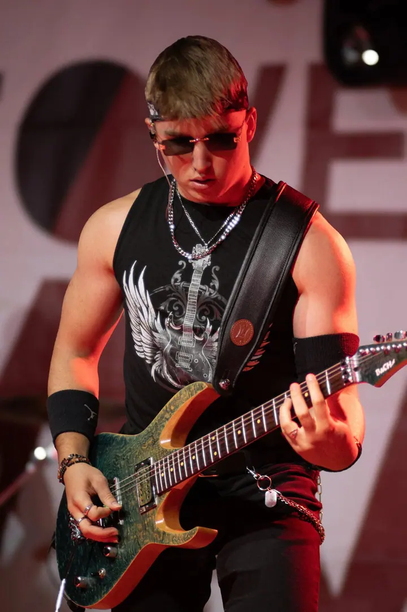

Portréty
Ženské i mužské portréty v ateliéru i venku. Společně vytvoříme fotografie, které mají emoci a příběh.

Portrétní a rodinná fotografka
Jmenuji se Anna Boháčová a ve Vlašimi fotím portréty, páry i celé rodiny. Snažím se zachytit neopakovatelné okamžiky plné emocí a vytvořit pro Vás vzpomínky, ke kterým se budete vracet.
Zeptat se na termín
Ženské i mužské portréty v ateliéru i venku. Společně vytvoříme fotografie, které mají emoci a příběh.
Focení pro dva, kde jde hlavně o vás a o to, co mezi vámi je. Odnesete si vzpomínky, ke kterým se budete rádi vracet.
Rodinné fotografie plné objetí, smíchu a obyčejné blízkosti. Ráda fotím i vánoční focení u stromečku.
Jsem fotografka a fotím pod značkou AN_SI_PHOTOGRAPHY. Věnuji se portrétnímu, rodinnému, párovému, svatebnímu i produktovému focení, ale ve všem hledám to samé: skutečnou emoci a příběh.
Mám ráda kontrast, černobílé portréty a měkké světlo v přírodě. Nejraději fotím lidi, kteří jsou si blízcí, protože právě tam vznikají fotky, které nejdou zopakovat.
Najdete mě ve Vlašimi, ale ráda za vámi přijedu. Cestuji po celé České republice i do zahraničí.

Napište mi přes formulář, e‑mailem nebo zavolejte. Řekněte mi, jaké focení si představujete.
Společně vybereme termín, místo a styl focení, ať už ve Vlašimi, nebo tam, kde jste doma vy.
Fotíme v klidu a bez spěchu. Postarám se, abyste se před foťákem cítili přirozeně.
Fotky pečlivě vyberu a upravím a pošlu vám je v online galerii.
Jsem ve Vlašimi, ale ráda cestuji po celé České republice i do zahraničí.
Ano, kromě portrétů, párů, rodin a produktů fotím i svatby. Napište mi termín a domluvíme se.
Ano, vánoční focení je oblíbené hlavně u rodin s dětmi. Termíny se ozvěte domluvit s předstihem.
Cena záleží na typu a délce focení. Napište mi, co si představujete, a pošlu vám nabídku.